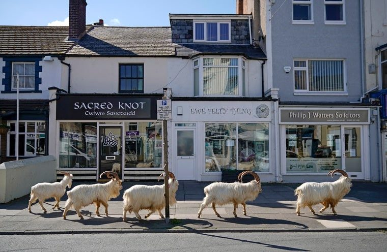
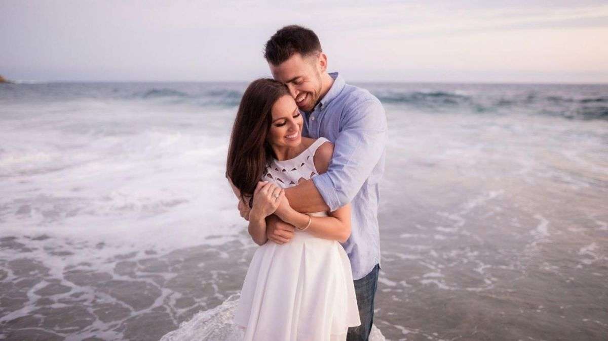

Effects of Covid-19 on Wildlife/Animals
September 29, 2020 by Dwayne Morgan

The pandemic, that is Covid-19, has been heavily impacting the human population forcing the doors of businesses and schools closed and making it mandatory for non-essential workers to remain at home in some countries or limiting the time of mobility. But what about the animals? What about the wildlife? This seems to be a very interesting topic to say the least!
In light of the outbreak of this virus, the wildlife has been impacted in a variety of ways both good and bad. On the bad side of the spectrum, zoo animals are actually being affected by this virus, a tiger at the Bronx Zoo tested positive for the coronavirus which she got from an asymptomatic zoo keeper and has been showing symptoms such as dry coughing. The more social and intelligent animals such as gorillas and otters have begun to miss the company and attention from the people who would frequently visit their exhibits on a regular day. Some wild animals such as ducks may even be depending on people for food and now this food supply has been limited
Enough with the bad, let’s look onto the more interesting good news. With people now being indoors, we have seen wild animals actually making their way into the more urban areas all over the world. We’ve seen them coming from their mountain sides or forests and traversing the towns and streets of the cities. There has also been a halt of wildlife trading between countries which can help to stop the spread of diseases in animals and preserve the species of animals being traded. We also see the numbers of certain species of animals begin to rise. These are indeed rough times but, there will always exist some hope. What do you think?
What is Photography? An Art....A Skill....A Job?
September 29, 2020 by Dwayne Morgan

What exactly is photography? Is it art? Is it a skill one has to develop? Is it a job that a person has? The truth is, photography can be a combination of all three. Photography is the art of creating lasting images by recording light by using an image sensor or film. The device popularly used for photography now is a camera. Cameras have gotten great over the years with the advent of technology, especially the fact that we can get a very capable “shooter” in very compact devices such as our smartphones. We can quickly snap a photo and freeze that memorable moment in time.
Each person can develop their own style of photography, some may prefer shooting landscape photos of mountains, forest and oceans other may enjoy shooting portraits of people or animals. Now let’s connect a few dots. By using our cameras to take photos, we can get a little technical in order to get the desired look to depict the feelings and atmosphere the photographer was trying to depict. This then becomes a skill that can be refined over time. With practice, one can learn how to manipulate the shutter speed and aperture of the lens, tame the illuminating flash, capture fast moving subjects or gaze at the sky and shoot the stars.
Now for the final piece of the puzzle. Once your skill is refined, and you’ve built a good reputation for yourself, one can then venture into the working world as a reputable photographer for modelling agencies, product photography for businesses, coverage for events such as parties or weddings or work for the local press. Photography adds a little visual flare to our daily lives. Have you figured out your style of photography? What would it be?